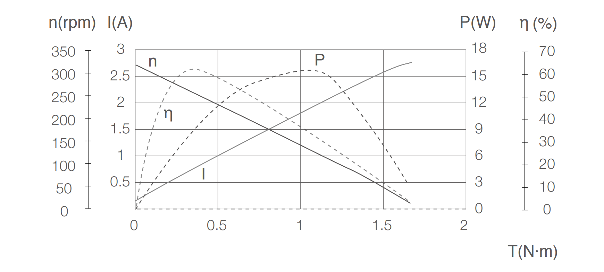
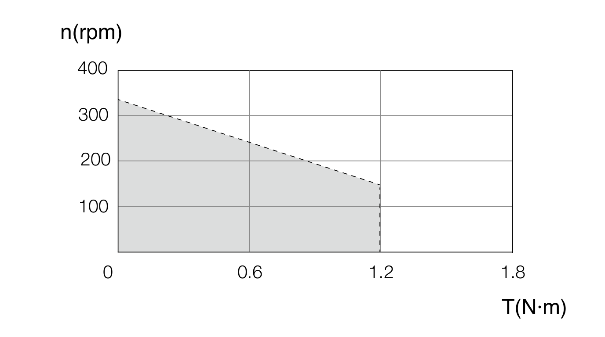
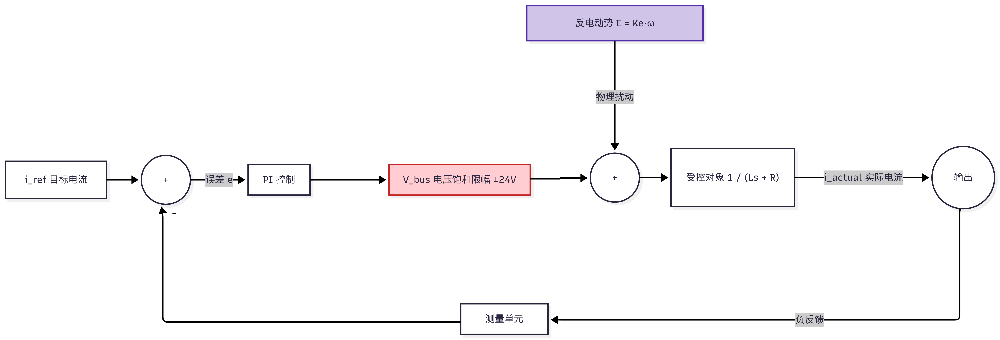
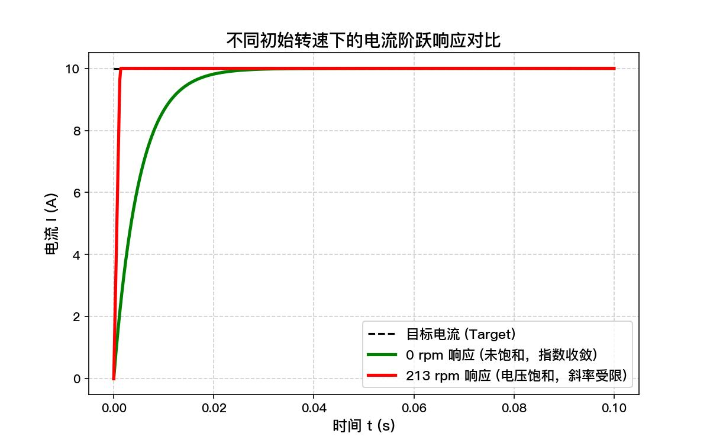
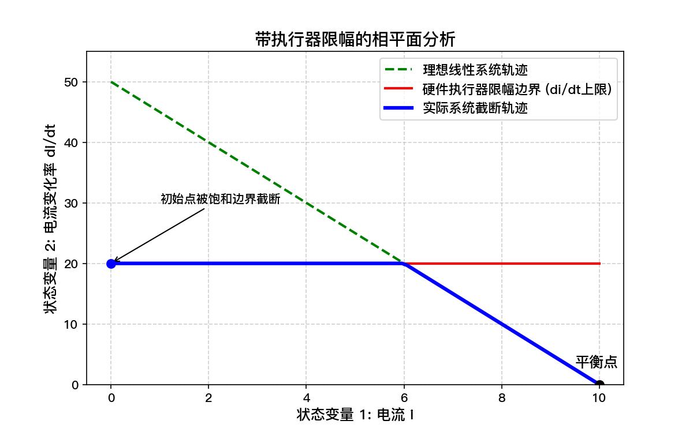
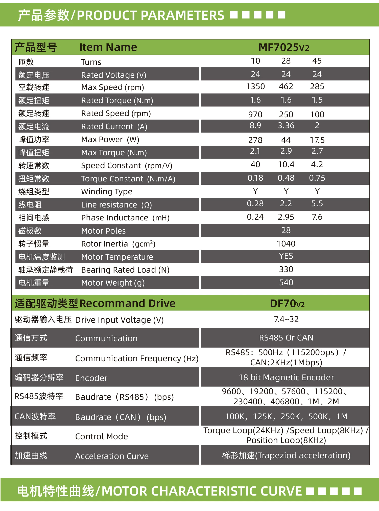

# 关于 BLDC 电机高速响应的一些探讨
# —— 从云台电机的阶跃响应差异谈起
# 前言：一个实验现象
在观看电控和视觉调车时，经常会出现以下现象：
击打同一转速的目标，底盘静止时，自瞄命中率可能很高，而底盘高速小陀螺时，自瞄的命中率显著降低。
即，同一台云台电机，同样的 PID 参数，同样的阶跃指令：
- 在 0 转速附近启动时，响应凌厉果断，云台 “咔” 地一下就到位；
- 在 213 rpm 运行时，同样的阶跃指令却变得 “软绵绵”，云台慢悠悠地追上去。
这并非 PID 参数没调好，也不是单纯的 "电机扭矩不足"，而是电机本身特性导致的必然结果。本人并非电控组成员，但身为自动化专业学生，姑且学过一点电机相关理论，力求从一个简单直观的角度真正搞懂这个问题的产生原因。
# 第一章 电机特性曲线的阅读指南
在深入分析之前，让我们先学会看懂电机特性曲线图。
# 1.1 以转速为横轴的标准曲线
一张典型的 BLDC 电机特性图包含四条核心曲线：
1 | 扭矩/电流 |
四条曲线的物理意义：
| 曲线 | 趋势 | 物理含义 |
|---|---|---|
| 扭矩 - 转速 (T-N) | 近似线性下降 | 转速越高，能输出的最大扭矩越小 |
| 电流 - 转速 (I-N) | 与扭矩曲线平行 | 扭矩和电流成正比，想要劲儿就得给电流 |
| 功率 - 转速 (P-N) | 抛物线（倒扣碗状） | ，最大功率点在中段 |
| 效率 - 转速 (-N) | 先升后降 | 最佳工作点在中段偏右 |
# 1.2 以扭矩为横轴的工程图
这种图更贴近 “负载变化” 的视角：

关键特征点的对照：
| 位置 | 横轴 | 左轴 | 右轴 | 意义 |
|---|---|---|---|---|
| 最左端 | 0 | 最高转速 | 0 | 空载，跑最快但不做功 |
| 碗顶处 | 约一半最大扭矩 | 约一半最高转速 | 最大功率 | 爆发力最强的点 |
| 最右端 | 最大扭矩 | 0 | 0 | 堵转，劲儿最大但不转 |
一个重要认知：最右端扭矩最大，为什么功率是零？这里的功率是指输出的机械功率。转速为零，所有输入电能全部变成发热，输出的机械功率自然为 0。
# 第二章 电机的硬性约束 (以 GM6020 为例)
# 2.1 集成电调意味着什么
GM6020 不是一颗单纯的电机，而是一个电机 + 驱动器 + 固件的封闭系统。
1 | ┌─────────────────────────────────────────┐ |
# 2.2 电压平衡方程：电机的第一性原理
直流无刷电机的一相绕组电压方程为：
其中：
- ：母线电压（GM6020 固定 24V）
- ：电阻压降（产生扭矩的电压分量）
- ：电感感应压降（电流变化时的瞬态压降）
- ：反电动势（与转速成正比的抵消电压）
直观理解：
把电压想象成 “推力”。反电动势就是电机转起来之后产生的 “反向推力”。转速越高，反向推力越大，留给加速的净推力就越小。
# 2.3 额定转速：反电动势的 “时钟”
空载转速 和反电动势系数 的关系：
- 低额定转速电机（如 GM6020，320rpm@24V）： 很大。转速每增加一点，反电动势就吃掉一大口电压。
- 高额定转速电机（如假设某 1000rpm@24V 电机）： 很小。反电动势增长极其缓慢。
数值对比：
| 参数 | GM6020 (低额定转速) | 假设某高速电机 (高额定转速) |
|---|---|---|
| 额定转速 @24V | 320 rpm | 1000 rpm |
| 反电动势系数 | \approx 0.075 \text | \approx 0.024 \text |
| 在 213rpm 时的反电动势 | \approx 16\text | \approx 5\text |
| 在 213rpm 时的可用电压 |
同样的 213rpm，GM6020 的可用电压只剩 8V，而高速电机还有 19V。这就是响应差异的根源。
# 2.4 功率限制曲线：软件层面的限制
电机内置电调遵守严格的 T-N 包络线保护：
GM6020 官方持续工作范围图（摘自使用手册）

| 区域 | 转速范围 | 扭矩限制 | 限制原因 |
|---|---|---|---|
| 恒扭矩区 | 0 ~ 150 rpm | 最大 1.2 N・m | 电流上限 |
| 近似恒功率区 | 150 ~ 320 rpm | 逐渐衰减至 0 | 功率上限 |
| 空载区 | > 320 rpm | 接近 0 | 反电动势已顶满 24V |
# 第三章 反电动势常数的决定项
# 3.1 由谁决定
反电动势常数 是电机出厂即固化的，其表达式为：
其中：
- ：磁极对数
- ：每对磁极下的永磁体磁链
进一步展开 （集中绕组近似）：
三个决定因素的直观理解：
| 符号 | 名称 | 如何影响 | 类比 |
|---|---|---|---|
| 极对数 | 正比 | 串联的 “电池节数” | |
| N_ | 每相串联匝数 | 正比 | 每节电池的 “线圈圈数” |
| 每极气隙磁通 | 正比 | 磁钢的 “磁场强度” |
极对数 的关键作用：
- 机械转一圈，磁场交变 次
- 感应电压 = 单对极电压
- 极对数越多，同样转速下反电动势越高
设计权衡：
- 高 、高 、强磁钢 大 低速大扭矩，但高速响应差
- 低 、低 、适中磁钢 小 高速响应好，但需要减速箱增扭
GM6020 选择了前者：为了直驱云台的大扭矩，牺牲了高速响应。
# 第四章 从控制理论的解析
# 4.1 电流环的控制框图
GM6020 电流模式的本质是 FOC 电流环，其简化框图如下：

反电动势在控制框图中是一个加在受控对象输入端的可估计扰动
# 4.2 未饱和时的理想响应（0 转速）
在 0 转速时，，系统的开环传递函数为：
设计者可以配置出 100Hz 的电流环带宽。阶跃响应是一条以指数形式快速收敛的曲线
# 4.3 饱和时的退化响应（高转速）
在 213rpm 时，。前馈补偿已经输出 16V，PI 控制器的有效调节范围只剩 8V。
当阶跃指令到来，PI 输出试图增加电压，但立刻被 24V 上限截断：
1 | PI输出: 16V + 10V = 26V ──[饱和]──▶ 实际输出 24V |
此时反馈回路被物理切断，系统退化为恒定电压驱动的 RL 电路：
电流以固定斜率爬升：

从频域角度看，这种退化可以理解为电流环带宽的下降。电流环的动态能力本质上受电流变化率 限制，而：
当转速 增大时，可用电压裕量迅速下降，导致系统带宽降低。
# 4.4 执行器饱和的非线性分析
状态空间描述：
为了严谨描述机电耦合系统，我们选取电流 和电机转速 作为状态变量。系统的一阶状态方程组为：
其中 是 PI 控制器的输出量：。
关键结论：
- 线性区压缩： 在 0 转速时，由于 ，PI 控制器拥有完整的 调节空间。
- 平衡点移动： 当转速 时， 占据了约 的静差。这意味着对于正向阶跃指令，有效的前向驱动电压被压缩到了 。
- 非线性退化： 此时系统的工作点极度靠近执行器饱和边界。任何略大的动态误差都会导致 撞上 的物理限幅，使得闭环反馈回路在饱和期间失效，系统退化为简单的电压爬坡模型。
三个层次的退化：
| 层次 | 控制理论描述 | 物理现象 |
|---|---|---|
| 稳态裕量 | 反电动势占据绝大部分控制量 | 同样电流需要更高母线电压支撑 |
| 动态增益 | 饱和导致等效闭环增益下降 | 闭环带宽随误差增大而剧烈降低 |
| 机电耦合 | 转速反馈（扰动）削弱了电气动态 | 外部负载波动更容易干扰电流稳态 |
# 第五章 双积分器饱和：加速度与加加速度的双重限制
# 5.1 完整的三阶动力学系统
从电压指令到云台角位置，系统本质上是一个三阶串联动力学系统（1 阶电气 + 2 阶机械）。所谓的 “响应变慢”，实质上是物理约束在不同环节上的叠加。
| 物理量 | 环节属性 | 关系方程 | 受限原因 |
|---|---|---|---|
| 端电压 | 控制输入 | 母线电压限制 | |
| 电流 | 一阶动态 | 电压裕量 限制 \frac{di} | |
| 扭矩 | 代数关系 | 正比关系，无积分延迟 | |
| 角速度 | 积分环节（T→ω） | J\frac{d\omega}{dt} = T - T_ | 电流上限 限制了加速度 |
| 角位置 | 积分环节（ω→θ） | 最终输出目标 |
# 5.2 两个独立的物理天花板
天花板一：电流上限 加速度限制
- 物理后果：决定了电机能达到的最大加速度 。即使电压充沛，如果电流被保护算法限死，电机也只能以恒定加速度追赶。
天花板二：电压饱和 加加速度（Jerk）限制
- 物理后果：由于 被 抵消，可用的 变小，导致扭矩建立的速度（）变慢。
- 宏观感受：加速度不是 “瞬间” 产生的，而是慢慢涨上去的。这就是 213 rpm 下响应 “软” 的第一物理根源 —— 系统在电流环这个环节就提前失去了敏捷性。
# 5.3 为什么 “加加速度限制” 更致命
数值对比：
| 工况 | 可用电压 V_ | 最大电流变化率 | 宏观感受 |
|---|---|---|---|
| 0 rpm | 24V | 推背感瞬间建立，响应 “脆” | |
| 213 rpm | 8V | 推背感慢慢建立，响应 “肉” |
核心洞察：即使在电流远未达到上限的线性调节区，电流的爬升速率已经被电压饱和死死压住。这就是高速下 “反应迟钝” 的第一物理根源。
# 5.4 完整的状态空间模型
其中：
- 是 的电压限幅
- 是电调设定的电流限幅曲线
# 第六章 相平面分析：非线性系统的直观几何
# 6.1 线性系统的优雅轨迹
在 0 转速未饱和时，系统状态 在相平面上的轨迹是一条以指数形式快速收敛到新平衡点的优美曲线，
系统的特征值（极点）完全由 决定，与初值无关。
# 6.2 饱和系统的截断轨迹
在高转速饱和时，状态轨迹被截断：

当 试图增加时， 无法达到线性系统应有的值，而是被限制在：
这条直线的斜率远小于线性系统的初始斜率 —— 这就是实验中看到的 “爬升变慢” 的几何解释。
# 第七章 工程选型
若要在全速段保持一致的凌厉响应，应选择额定转速远高于实际最高工作转速的电机。
电压利用率法则：
- GM6020（实际 213rpm，额定 320rpm） 利用率约 33% 深度饱和区，响应疲软
- 某高速电机（实际 213rpm，额定 2000rpm） 利用率约 89% 全速段线性区，响应硬朗
现在根据上面学到的知识，选择一款合适的 7025 电机吧！

# 第八章 总结
# 8.1 核心公式
- 电压平衡方程：
- 电流最大变化率：
- 反电动势常数：
- 电压利用率：
# 8.2 总结
直流无刷电机系统是一个带执行器幅值饱和的串级积分系统。反电动势作为转速的线性函数，在高转速下将系统工作点推至饱和边界，导致：
- 等效开环增益衰减 闭环带宽被动降低
- 状态导数被限幅 加加速度（jerk）受限
- 齐次性破坏 响应强烈依赖于初值
这是执行器受限系统（Actuator-Constrained Systems）的固有顽疾，无法通过线性控制器参数整定根治。
当底盘进入高速小陀螺模式时，为了维持云台指向，云台电机实际上一直运行在高转速（213 rpm）状态。此时电机深陷电压饱和区，di/dt 建立缓慢。当视觉给出一个细微的 “纠偏指令” 时，电机无法像静止时那样瞬间产生扭矩，导致跟踪滞后。这本质上是执行器饱和带来的动态相位滞后。
选型策略：在额定转矩相近的前提下，额定转速是决定全速段响应一致性的支配性参数。选择额定转速远高于实际最高工作转速的电机，用硬件设计的余量换取全速段线性运行的权利，是保证动态品质的根本之道。